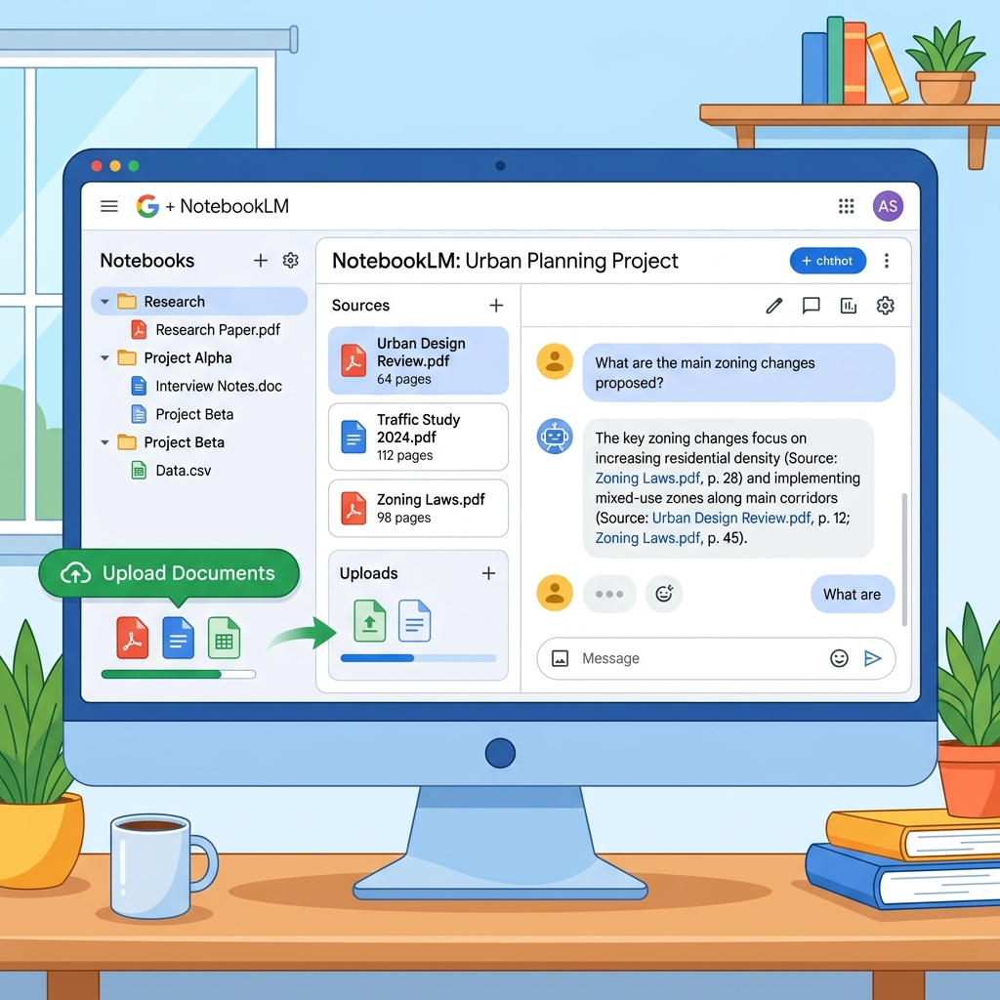

どのデータを入れてよいかを決める → まず試してもらう → 使う人の人数分だけ払う。 30分で全体が見える地図を、note で順次公開します。
数百万円の専用システムを契約する前に。まず月3000円程度のAIチャット（無料でも試せます）で足りるかを、自社で確かめられます。費用の相場、任せられること、ベンダー見積の見極め——決めるための材料を、現役の建設部門技術士が実務目線で整理します。
建設の中小企業がAI導入で判断することは、多くありません。まず全体像を30分でつかんでください。
どのデータを入れてよいかを決める → まず試してもらう → 使う人の人数分だけ払う。 30分で全体が見える地図を、note で順次公開します。
止めるのは、人の名前がわかるものと、まだ公表されていない金額だけ。会社が契約したAIなら、施工計画書も議事録もそのまま扱えます。
無料のAIチャット（ChatGPT・Gemini・Claude など）で、社員が自分の仕事1つに使ってみる。お金をかけるのは、足りないと分かってからで十分です。
無料で足りなくなったら、使う人の人数分だけ——目安は1人 月3000円ほど。数十万〜数百万円の専用システムは、いちばん最後の選択肢です。
同じ規模の会社はどうしている？ → 地方・中小の建設会社の生成AI事例（note14）／人手不足の視点は → AI費用は「人件費」で考える（note19）
「専用AIじゃないとダメ」と思い込む前に、知っておくと安心な3つのことをお話しします。
土台が同じなら、同じことが1人 月3000円程度の汎用AIでできます。まずは無料で試し、大きな契約はそれから判断すれば十分です。
NotebookLMなら、PDFを読み込ませるだけで、渡した資料だけを根拠に出典付きで答えます。提供元は「入れたファイルを学習に使わない」方針を公式に明記しています（※最新は公式でご確認ください）。まずは発注者が公開している共通仕様書で試し、自社の資料に進むときは、会社が契約した環境（法人向け）に移ってください。
「何万件もの資料を一度に検索したい」「部署ごとに見られる範囲を分けたい」——そこまで来て初めて、大きな投資の出番です。

止めるのは、人の名前がわかるものと、まだ公表されていない金額だけ。ここさえ外せば、会社が契約したAIで業務の資料をそのまま扱えます。
AI活用の費用は、大きく3段階に分かれます。いきなり大きな投資をしなくても、まずは小さく始められます。
無料のAIで、社員が自分の仕事1つに使ってみる。
まず、ここから無料で足りなくなったら、使う人の人数分だけ払う。
無料で足りなければ全社規模になって初めて、専用システムの出番。
いちばん最後費用の早見：業者製の「専用システム」は、初期 数十万〜数百万円＋毎月の利用料。いっぽう汎用の生成AIは、無料〜1人あたり月3000円ほど。まず汎用の生成AIで試し、足りなくなってから専用システムを検討するのが、いちばん損のない順番です。
→ ツールごとの詳しい機能比較は 「実務で使う」ページの比較表で見比べられます。
営業資料からは分からない3つの事実を、契約の前に確かめてください。高い専用システムは、無料で試しきってからで十分です。
なぜ「まず無料で試す」と言うのか。運営者自身の反省からお話しします。
私の会社も、はじめは有償のAIサービスから入りました。 当時の私には、無料でどこまでできるかが見えていませんでした——このサイトは、その反省から生まれました。
避けたいのは、この3つだけです。先に買う／全面禁止にする／丸投げを期待する。この裏返しが、上の「決めること3つ」です。
導入の是非、費用、社内ルール、事例、契約前の見極めまで。決めるために読む記事を、現役の建設部門技術士が整理しました。（順次公開）
経営者の判断
「御社専用の建設AI」の営業を受けたら、契約の前に読む記事です。月3000円程度で足りるかを先に確かめます。
建設の中小の経営者がAIについて決めることは3つだけ。30分で全体像がつかめる「地図」です。
（note準備中）過去の報告書・技術資料をAIに活かす3つの方法を、費用と手間の一覧で整理。どれもサブスクの生成AIだけで、専用システムは要りません。
（note準備中）国交省が特記仕様書に生成AIの扱いを明記へ。受託業務でのAIは「隠す」から「共有する」に変わります。
（note準備中）会社が契約したAIなら、施工計画書も議事録もそのまま入れられます。止めるのは個人情報だけ。1枚の表で整理しました。
（note準備中）従業員10名台からの建設会社が、生成AIで何をどう変えたか。地方・中小の事例だけを集めました。
（note準備中）研修では広まりません。社員がAIを使い始めるのは「隣の人の5分」を見たとき。実体験の手順です。
（note準備中）建設の中小企業の生成AI費用は3段階で考えます。目安は、試すのは無料→1人あたり月3000円程度→それ以上は壁の後。
（note準備中）高い契約の前に。建設会社のAI導入の失敗は4パターンに集約されます。私自身の失敗も含めて書きます。
（note準備中）"建設特化AI"の契約前に、営業資料からは分からない3つの事実を確かめてください。技術士がまとめました。
（note準備中）求人に応募が来ないなら、先に社内の「時間」をつくる。AI費用を人件費の棚で考える話です。
（note準備中）費用・社内ルール・契約の判断材料を、公開順にまとめています。noteのマガジン「経営者の判断（費用・ルール・契約）」を見る